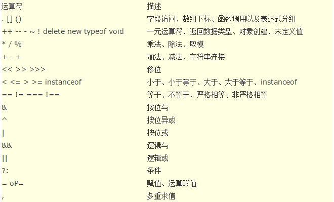

运算符
JavaScript的算术操作符包括 +、-、*、/ 和 % ——求余（与模运算不同）。赋值使用 = 运算符，此外还有一些复合运算符，如 += 和 -=，它们等价于 x = x op y。
x += 5; // 等价于 x = x + 5;
可以使用 ++ 和 -- 分别实现变量的自增和自减。两者都可以作为前缀或后缀操作符使用。
- 操作符还可以用来连接字符串：
"hello" + " world"; // hello world
如果你用一个字符串加上一个数字（或其他值），那么操作数都会被首先转换为字符串。如下所示：
"3" + 4 + 5; // 345
3 + 4 + "5"; // 75
这里不难看出一个实用的技巧——通过与空字符串相加，可以将某个变量快速转换成字符串类型。
JavaScript 中的比较操作使用 <、>、<= 和 >=，这些运算符对于数字和字符串都通用。相等的比较稍微复杂一些。由两个“=（等号）”组成的相等运算符有类型自适应的功能，具体例子如下：
123 == "123" // true
1 == true; // true
如果在比较前不需要自动类型转换，应该使用由三个“=（等号）”组成的相等运算符：
1 === true; //false
123 === "123"; // false
JavaScript 还支持 != 和 !== 两种不等运算符，具体区别与两种相等运算符的区别类似。
JavaScript 还提供了 位操作符。
运算符的优先级
下表按从最高到最低的优先级列出JavaScript运算符。具有相同优先级的运算符按从左至右的顺序求值:
